Römork, kültivatör, loader kepçe ve su tankerini Göksun’daki atölyemizde kendimiz üretiyoruz. Diğer tarım aletlerinin satışını yapıyoruz.
Kendi imalatımız
01Tarım Römorku5
02Yaylı Kültivatör6
03Loader Kepçe7
04Su Tankeri8
Sattığımız ürünler
05Tapan10
06Pulluk11
07Gübre Serpme Makinesi12
0532 480 30 51Telefon · WhatsApp Her gün 08:00–19:00
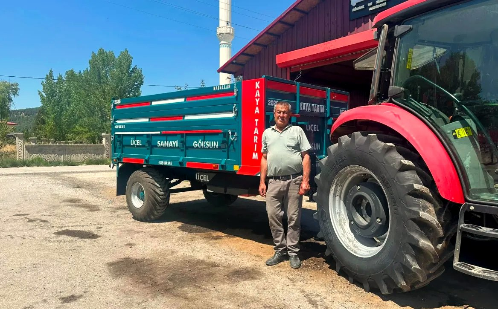
Hoş geldiniz
Göksun’dan, tarlanıza.
Yeni römorkunu teslim alan müşterimiz. Kasada kendi adı yazılı.
Üçel Tarım Aletleri olarak Göksun Sanayi Sitesi’ndeki atölyemizde römork, yaylı kültivatör, loader kepçe ve su tankerini kaynağından boyasına kadar kendimiz üretiyoruz. Ürünlerimizin üzerinde ÜÇEL · GÖKSUN yazar.
Pulluk, tapan ve gübre serpme makinesi gibi diğer aletlerin satışını da yapıyoruz. Traktörünüze ve işinize uygun olanı birlikte seçiyoruz.
Kendi imalatımızDört ürün Göksun’daki atölyemizden çıkar.
Size özelKasa rengi ve kasa yazısı isteğinize göre.
Türkiye geneliAnlaşmalı nakliyeyle kapınıza.
Satıştan sonraYedek parça, takas, ikinci el.
A · Kendi imalatımız
01Tarım Römorku5
02Yaylı Kültivatör6
03Loader Kepçe7
04Su Tankeri8
B · Sattığımız ürünler
05Tapan10
06Pulluk11
07Gübre Serpme Makinesi12
Hangi iş için hangi alet?3
Sahadan · Hizmetler · Fiyat13
Rehber
Hangi iş için hangi alet?
Tarlanın sürümünden hasadın taşınmasına kadar, sezon boyunca işinizi gören aletler.
1 · Sonbahar / ilkbaharToprağı sürmek
Toprağı devirir, anızı gömer. Derin işleme için ilk adım.
PullukSayfa 11
2 · Ekim öncesiToprağı inceltmek
Sürülmüş toprağı ufalar, tohum yatağını hazırlar.
Yaylı KültivatörSayfa 6
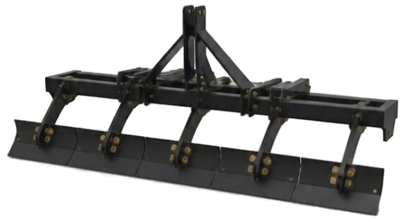
3 · Ekim öncesiTarlayı düzlemek
Keseği kırar, yüzeyi düzler; ekim makinesi düzgün çalışır.
TapanSayfa 10
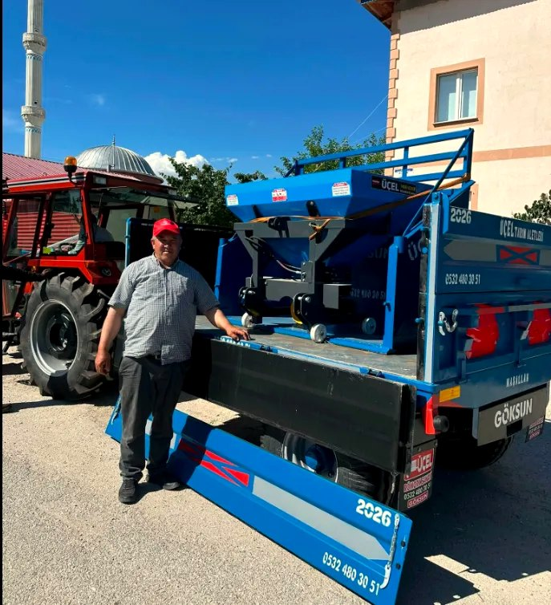
4 · Ekimle birlikteGübre vermek
Granül gübreyi tarlaya dengeli şekilde serper.
Gübre Serpme MakinesiSayfa 12
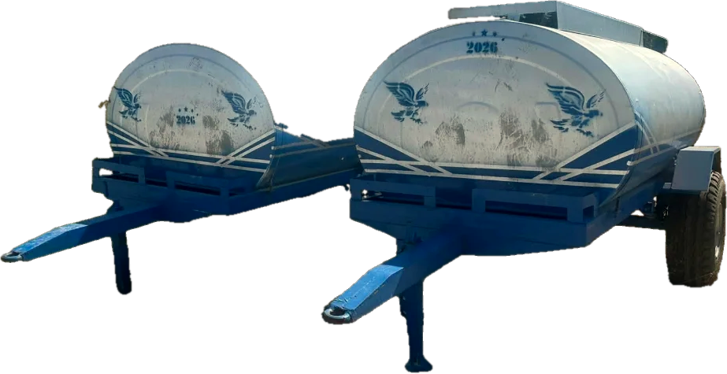
5 · Yaz boyuncaSu taşımak
Tarla sulaması, merada ve yaylada hayvan suyu.
Su TankeriSayfa 8
6 · Hasat ve kışTaşımak
Ürün, saman, yem, odun ve gübre taşıma.
Tarım RömorkuSayfa 5
7 · Her mevsimYüklemek
Gübre, yem ve malzemeyi kaldırır, römorka yükler.
Loader KepçeSayfa 7
Önce traktörünüze bakın. Her aletin istediği traktör gücü farklıdır. Traktörünüzün marka, model ve beygir gücünü yazın; gücüne uygun olanı söyleyelim.
A · İmalat
Bölüm A
Kendi imalatımız
Göksun Sanayi Sitesi’ndeki atölyemizde kaynağından boyasına kadar kendimiz üretiyoruz. Ürünlerimizin üzerinde ÜÇEL · GÖKSUN yazar.
01Tarım RömorkuSayfa 5
02Yaylı KültivatörSayfa 6
03Loader KepçeSayfa 7
04Su TankeriSayfa 8
4
ÜÇELTarım Aletleri · Göksun
01 / 07 · Taşıma
01
Kendi imalatımız
Tarım Römorku
Ürününüzü, yeminizi, odununuzu tek römorkla taşıyın.
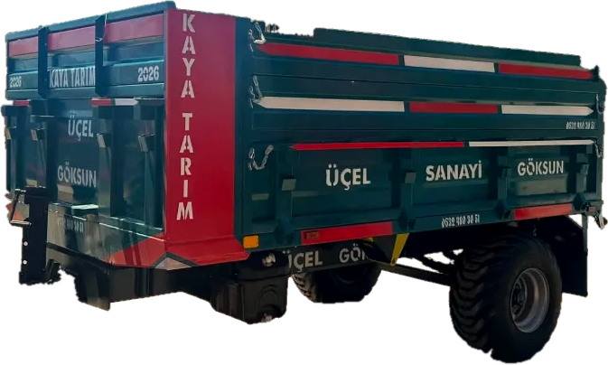
Yeşil kasa, üzerinde müşterimizin adı
Hasat ve yemÜrün, saman, yem ve gübre
Odun ve malzemeYakacaktan yapı malzemesine
Size özelKasa rengi ve kasa yazısı isteğinize göre
Tarladan eve, depodan tarlaya yük taşımanın temel aleti. Kaynağından boyasına kadar Göksun Sanayi Sitesi’ndeki atölyemizde üretiyoruz.
Üretim
Üçel · Göksun atölyesi
Kasa rengi
İsteğe göre
Kasa yazısı
İsim, firma adı, “Maşallah”
Ölçüler modele göre
Taşıma kapasitesi
Kasa iç ölçüsü
Dingil
Damper
Lastik ebadı
Traktör gücü
Size uygun modelin ölçü tablosunu WhatsApp’tan hemen gönderiyoruz.
Renk seçenekleri
MaviYeşilKırmızıve istediğiniz diğer renkler
Standart dışı ölçüde özel imalat
Sahadan · gerçek fotoğraflar
Teslim günü: kasada müşterimizin adı yazılı.
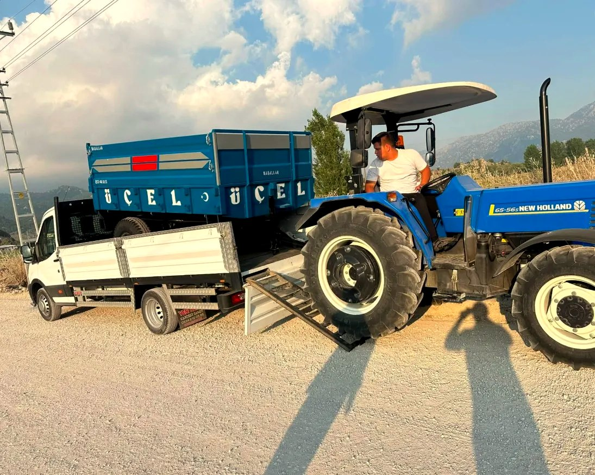
Mavi römork, yola çıkmadan önce.
ÜÇELTarım Aletleri · Göksun
02 / 07 · Toprak işleme
02
Kendi imalatımız
Yaylı Kültivatör
Pulluktan sonra toprağı inceltir, tohum yatağını hazırlar.
Mavi renk seçeneği
Toprağı inceltirSürülmüş toprağı ufalar
Tohum yatağıEkim için düzgün yatak
Ot mücadelesiYabancı otu söker
Göksun model yaylı kültivatör. Yaylı ayaklar taşa çarpınca esner; hem aleti hem traktörü korur.
Ayak tipi
Yaylı
Model
Göksun
Üretim
Üçel · Göksun atölyesi
Ölçüler modele göre
Ayak sayısı
Çalışma genişliği
Çalışma derinliği
Traktör gücü
Size uygun modelin ölçü tablosunu WhatsApp’tan hemen gönderiyoruz.
Renk seçenekleri
KırmızıMavi
Farklı ayak sayısı ve ebat
Sahadan · gerçek fotoğraflar
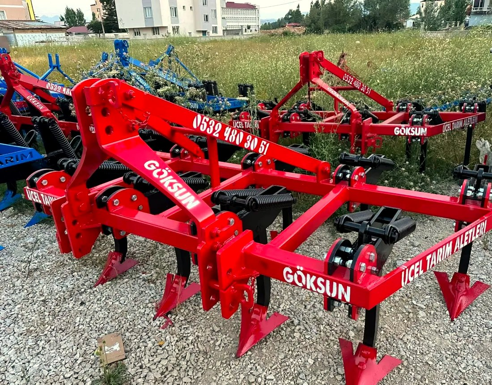
Kırmızı Göksun kültivatörler, teslime hazır.
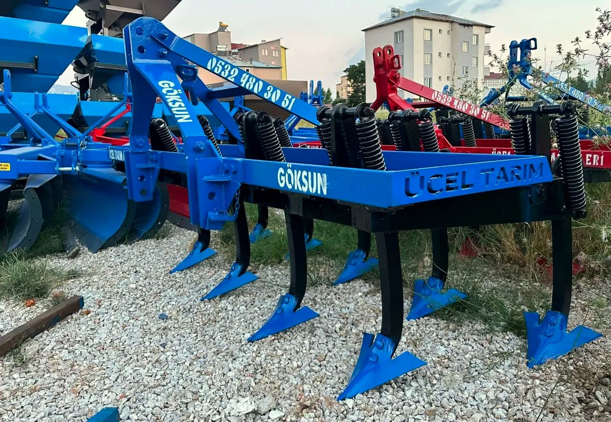
Mavi seçenek, atölyemizin önünde.
ÜÇELTarım Aletleri · Göksun
03 / 07 · Yükleme
03
Kendi imalatımız
Loader Kepçe
Gübre, yem ve malzemeyi traktörünüzle yükleyin.
YüklemeGübre, yem, toprak, malzeme
Ahır ve çiftlikGünlük işte kol gücünü azaltır
Traktörünüze göreMontaj uygunluğunu birlikte kontrol ederiz
Traktörünüzün önüne takılan hidrolik kepçe. Yem, gübre ve malzemeyi kaldırıp taşır. Kendi atölyemizde imal ediyoruz.
Çalışma
Hidrolik
Montaj
Traktörünüzün modeline göre
Üretim
Üçel · Göksun atölyesi
Ölçüler modele göre
Kaldırma kapasitesi
Kaldırma yüksekliği
Kepçe genişliği
Traktör gücü
Size uygun modelin ölçü tablosunu WhatsApp’tan hemen gönderiyoruz.
Renk seçenekleri
KırmızıMavi
Sahadan · gerçek fotoğraflar
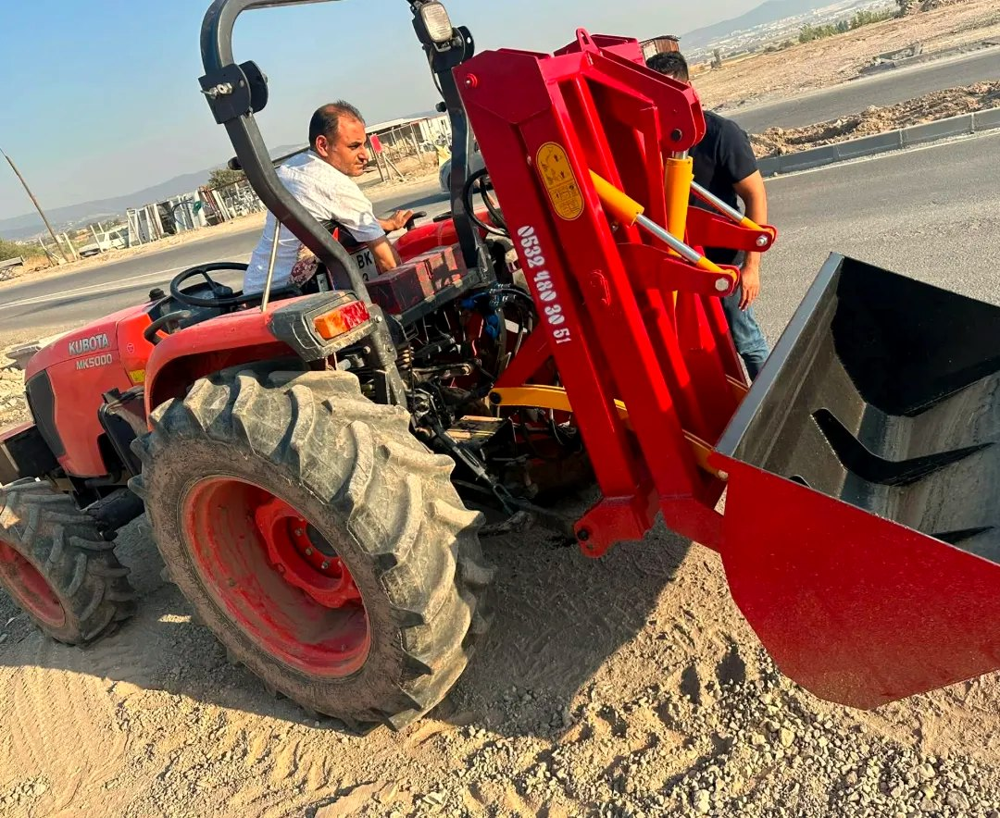
Traktöre takılmış kırmızı loader.
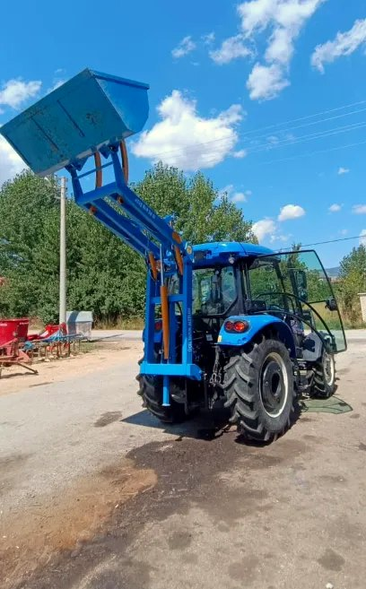
Mavi traktöre mavi loader.
ÜÇELTarım Aletleri · Göksun
04 / 07 · Su
04
Kendi imalatımız
Su Tankeri
Tarla sulaması ve hayvan suyu için traktörle çekilen tanker.
Tarla sulamaBahçe, fidan ve tarla başı
Hayvan suyuMerada ve yaylada
Su taşımaTraktörle çekilir, çeki oklu şasi
Merada ve yaylada hayvanlara, bahçede fidana, tarla başında ilaçlamaya su taşır. Göksun’daki atölyemizde imal ediyoruz.
Çekiş
Traktörle, çeki oklu şasi
Üretim
Üçel · Göksun atölyesi
Ölçüler modele göre
Kapasite (lt)
Tank malzemesi
Dingil
Pompa
Traktör gücü
Size uygun modelin ölçü tablosunu WhatsApp’tan hemen gönderiyoruz.
Farklı kapasite seçenekleri
Sahadan · Hangi kapasite size uygun?
Teslime hazır su tankerleri, Göksun.
Hayvan sayısı
Sulama alanı
Traktör gücü
Hayvan sayınızı, sulayacağınız alanı ve traktörünüzün gücünü yazın; ihtiyacınıza uygun tank kapasitesini birlikte seçelim.
B · Satış
Bölüm B
Sattığımız ürünler
Toprak hazırlığından gübrelemeye. Traktörünüze ve işinize uygun olanı birlikte seçelim.
05TapanSayfa 10
06PullukSayfa 11
07Gübre Serpme MakinesiSayfa 12
9
ÜÇELTarım Aletleri · Göksun
05 / 07 · Toprak işleme
05
Satışını yapıyoruz
Tapan
Ekim öncesi tarlayı düzler, kesek kırar.
Temsili görsel
DüzlerTarla yüzeyini düzgünleştirir
Kesek kırarİri toprak parçalarını ufalar
Ekime hazırlarEkim makinesi düzgün çalışır
Pulluk ve kültivatörden sonra tarlanın yüzeyini düzleyip keseği kıran, ekime hazırlayan alet.
Ölçüler modele göre
Çalışma genişliği
Katlanır / sabit
Ağırlık
Traktör gücü
Size uygun modelin ölçü tablosunu WhatsApp’tan hemen gönderiyoruz.
Farklı genişlik seçenekleri
Üçel’den alırken
Traktörünüze uygunluğunu birlikte kontrol ederiz
Yedek parça desteği
Türkiye geneline gönderim
Tarlada iş sırası
1Pulluk
2Kültivatör
3Tapan
4Gübre serpme
5Ekim
Tapan 3. adımda kullanılır. Hangi aletin hangi işe yaradığını sayfa 3’teki rehberde bulabilirsiniz.
ÜÇELTarım Aletleri · Göksun
06 / 07 · Toprak işleme
06
Satışını yapıyoruz
Pulluk
Tarlanın ekim öncesi derin işlenmesinde temel alet.
Derin işlemeToprağı devirerek sürer
Anız bozmaArtıkları toprağa gömer
Gücüne uygunTraktörünüzü gereksiz yormaz
Toprağı devirerek sürer, anızı ve bitki artıklarını toprağa gömer. Toprağınıza ve traktörünüzün gücüne uygun pulluk traktörü gereksiz yormaz.
Tip
Kulaklı
Gövde sayısı
4 (fotoğraftaki model)
Ölçüler modele göre
Çalışma genişliği
Çalışma derinliği
Traktör gücü
Size uygun modelin ölçü tablosunu WhatsApp’tan hemen gönderiyoruz.
Farklı gövde sayısı seçenekleri
Üçel’den alırken
Traktörünüze uygunluğunu birlikte kontrol ederiz
Yedek parça desteği
Türkiye geneline gönderim
Sahadan · gerçek fotoğraflar
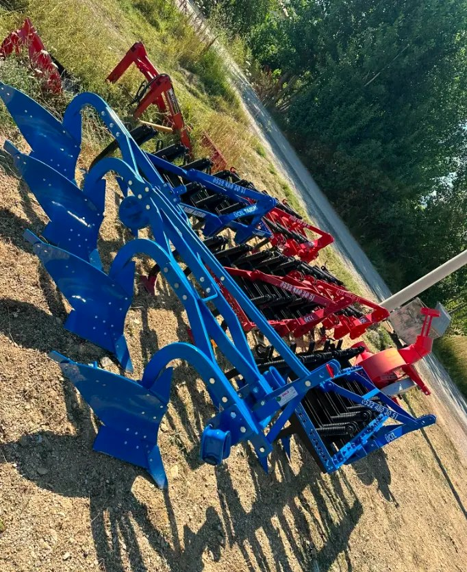
Kulaklı pulluklar, teslime hazır.
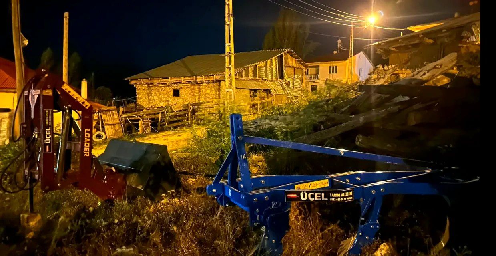
Akşam teslimatı: pulluk ve loader birlikte.
ÜÇELTarım Aletleri · Göksun
07 / 07 · Gübreleme
07
Satışını yapıyoruz
Gübre Serpme Makinesi
Gübreyi tarlanıza dengeli şekilde dağıtın.
Teslim günü, müşterimizle birlikte
Dengeli serpmeGranül gübreyi eşit dağıtır
Zaman kazandırırElle serpmeye göre çok hızlı
Arkaya takılırTraktör arkasına monte edilir
Traktörün arkasına takılır; granül gübreyi tarlaya eşit şekilde serper. Elle serpmeye göre hem zaman kazandırır hem gübre israfını azaltır.
Ölçüler modele göre
Depo hacmi
Serpme genişliği
Tip
Traktör gücü
Size uygun modelin ölçü tablosunu WhatsApp’tan hemen gönderiyoruz.
Farklı kapasite seçenekleri
Üçel’den alırken
Traktörünüze uygunluğunu birlikte kontrol ederiz
Yedek parça desteği
Türkiye geneline gönderim
Tarlada iş sırası
1Pulluk
2Kültivatör
3Tapan
4Gübre serpme
5Ekim
Gübre Serpme Makinesi 4. adımda kullanılır. Hangi aletin hangi işe yaradığını sayfa 3’teki rehberde bulabilirsiniz.
Sahadan
Teslim ettiklerimiz
Bu sayfadaki fotoğrafların hepsi gerçek: atölyemizden çıkan aletler, müşterilerimizin elinde.
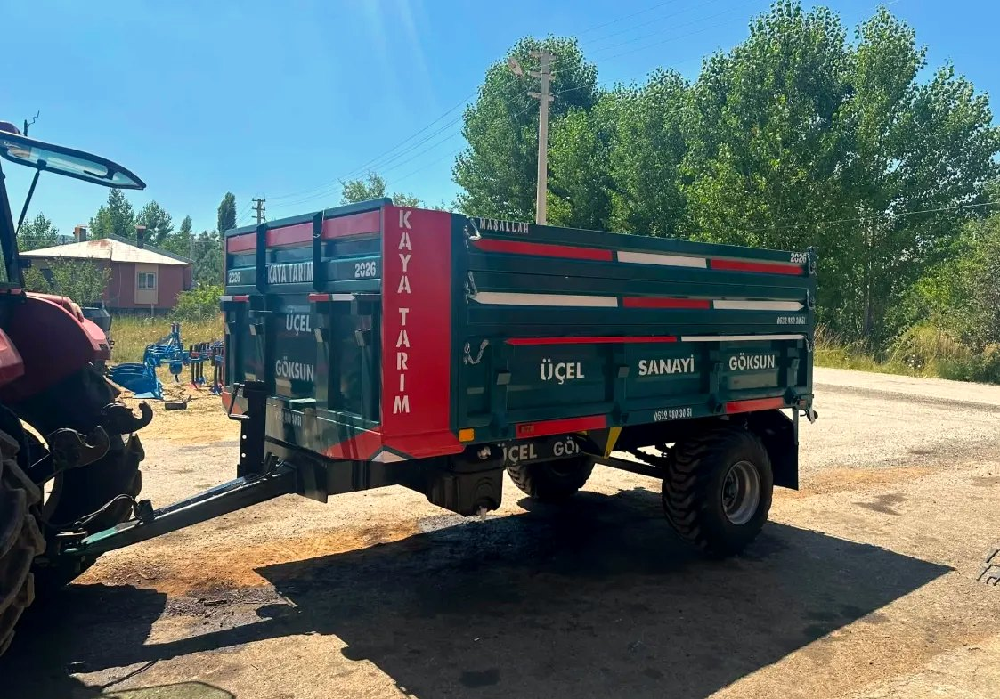
Yeşil römork, kasasında müşterimizin adıyla.
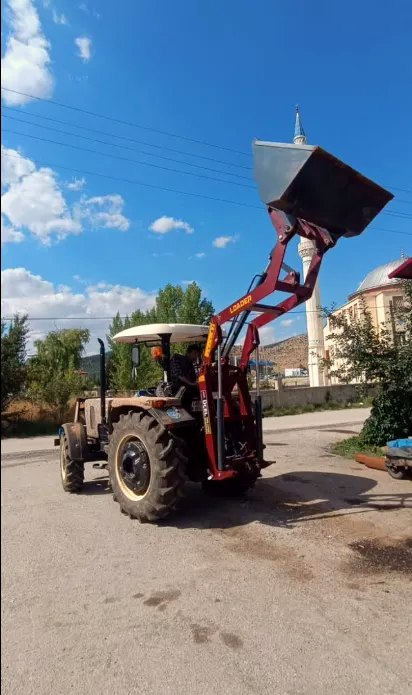
Loader kepçe tam yükseklikte.
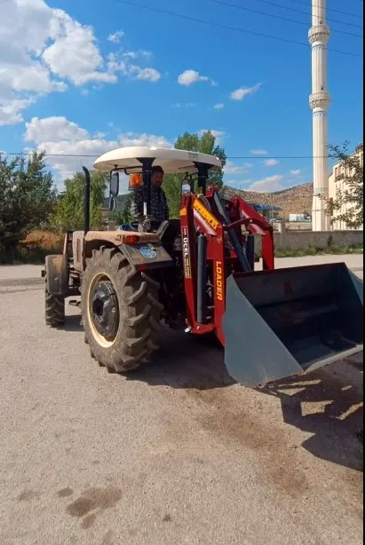
Traktöre takılı, işe hazır.
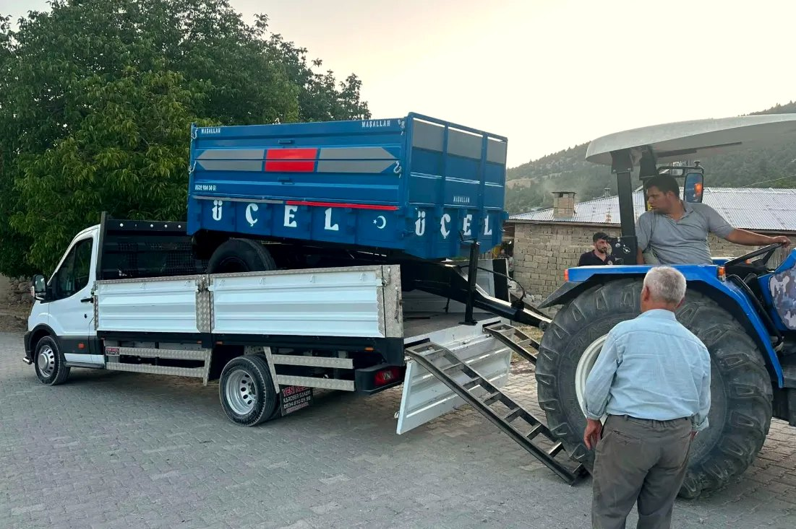
Uzak illere: römork yük aracında yola çıkıyor.
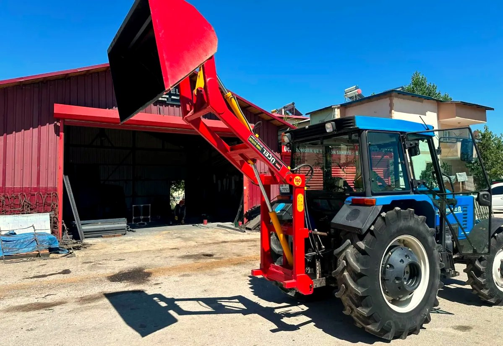
Göksun Sanayi Sitesi’ndeki atölyemizin önü.
Satıştan sonra da yanınızdayız
Hizmetlerimiz
Sadece satış değil; aletinizin her aşamasında yanınızdayız.
İkinci elİkinci el tarım aleti alıp satıyoruz; gerçek durumunu dürüstçe paylaşıyoruz.
TakasEski aletinizin fotoğrafını gönderin; yeni ya da ikinci el bir aletle takas edelim.
Özel imalatKendi imal ettiğimiz aletlerde ihtiyacınıza göre özel ölçü yapabiliyoruz.
Yedek parçaSattığımız ve sık kullanılan aletler için yedek parça bulunduruyoruz.
Atölyemizin önünde: bir alet müşterimize gönderilmek üzere yükleniyor.
Listede yoksa sorun
Katalogda görmediğiniz aletler için de bize yazın; birlikte bakalım.
Mibzer
Çayır biçme makinesi
Döner ot tırmığı
Tesviye küreği
ve diğerleri
Türkiye geneline gönderim. Nakliyeyi genellikle anlaşmalı nakliye firmalarıyla sağlıyoruz. Şehrinizi yazın, seçeneği birlikte belirleyelim.
Kolay sipariş
3 adımda fiyat alın
1Ürünü seçinBu katalogdan ihtiyacınıza uygun aleti bulun.
2WhatsApp’tan yazınÜrün sayfasındaki QR’ı okutun; mesajınız hazır açılır.
3Fiyatı konuşalımFiyatı, seçenekleri ve teslimatı birlikte netleştirelim.
Bize yazarken bunları ekleyin
Bu bilgilerle size en uygun aleti ve doğru fiyatı ilk mesajda verebiliriz. Kalemle doldurup fotoğrafını da gönderebilirsiniz.
İstediğiniz alet:
Traktör marka / model:
Traktör gücü (HP):
İl / ilçe:
Arazi (taşlı, ağır, düz…):
Renk / kasa yazısı:
Ad soyad:
Telefon:
Notlarım
ÜÇELTarım Aletleri · Göksun
Fiyat ve bilgi için
0532 480 30 51
Telefon ve WhatsApp · Her gün 08:00 – 19:00
WhatsAppMesajınız hazır açılır
KonumYol tarifi alın
Web sitesiTüm ürünler ve fotoğraflar
Hizmetlerimizİkinci el · Takas · Özel imalat · Yedek parça
Üçel Tarım Aletleri · Yeni Mah., Göksun Sanayi Sitesi, 46660 Göksun / Kahramanmaraş